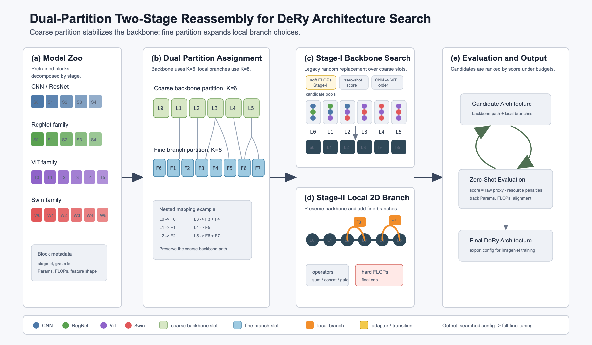
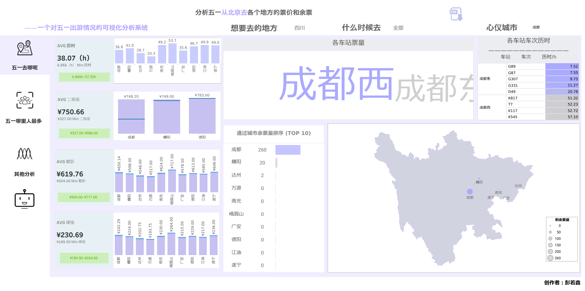

Peng Ruoxin · AI Application · Data Analysis
彭若鑫
Peng Ruoxin
数据科学与大数据技术本科，人工智能与大数据计算硕士在读。关注 AI 应用、机器视觉、数据分析与可视化，把算法项目做成可运行、可展示、可复盘的作品。
- 目标岗位
- AI 应用开发 / 数据分析 / 算法实习
- 目标城市
- 深圳 / 成都
- 可展示项目
- 6+ 个项目案例
- 当前状态
- Seeking internship
求职方向
AI 应用开发、数据分析、算法实习；目标城市深圳 / 成都。
作品证据
RAG 系统、视觉识别、票务 Dashboard 与数据库系统都有界面、视频或交互入口。
成果入口
简历 PDF、GitHub、Google Scholar、CSDN 与联系方式集中保留在页尾。
Selected Work
项目可以直接看运行状态。
每个项目都尽量保留界面、录屏、Dashboard 或论文入口，先看运行状态，再看方法和结果。

票务分析与可视化平台
通过 Python 爬取 12306 票务数据，利用 MySQL、Python 与 Tableau 建立可视化平台，支持车票查询与关联分析。
Interactive Tableau Dashboard
票务分析可视化平台
这是已接入的 Tableau Public 交互式作品，可以直接在页面里查看五一票务数据的可视化分析，也可以打开 Tableau Public 查看完整版本。
Tableau Public Embed
打开完整 Dashboard

Featured Case Study
双分区两阶段 DeRy 架构重组搜索
毕业设计进行中，围绕预训练模型 blocks 的可解释重组搜索，构建从模型拆分、双分区映射、两阶段架构搜索到 zero-shot 评估的完整流程。
1. Model Zoo
拆分 CNN/ResNet、RegNet、ViT、Swin 等预训练 blocks，记录 stage、group、Params、FLOPs 和特征形状。
2. Dual Partition
使用 coarse partition（K=6）稳定主干路径，使用 fine partition（K=8）扩展局部 2D 分支选择空间。
3. Two-Stage Search
Stage-I 搜索主干架构，Stage-II 保留主干并重组局部 2D 分支，通过 zero-shot 评估筛选候选结构。
4. LLM Insight
构建模型结构知识图谱，利用 LLM 学习结构规律与 FLOPs/Params 约束，形成可解释的重组策略结论。
Search Workflow
Partition
K=6 主干 / K=8 分支
Reassemble
两阶段结构重组
Evaluate
Zero-Shot 评分输出
Motion Intros
视频项目用轻量动画先讲清楚看点。
每个动画只保留一个核心链路：输入、方法、输出。想看真实界面时，再打开对应视频。
Resume Snapshot
教育和项目经历按时间线展开。
中国农业大学 · 数据科学与大数据技术（本科）
GPA 3.76/4，Rank 5/29；主修人工智能、机器学习、大数据存储与处理、大数据可视化分析、数据挖掘。
校级大创项目 · 基于机器视觉的智慧作物选种研究
使用 ANN、YOLO、ConvNeXt 与聚类算法完成大米分类、实时检测、残缺度评估与垩白区域面积计算，产出 Google Scholar 收录论文 2 篇。
数据库原理与实践课设（队长） · 博物馆藏品管理系统
使用 MySQL、Java 与 Spring Boot 实现藏品数据库管理系统，完成权限管理、错误输入拦截、弹窗提醒和图片路径存储方案。
校级大创项目（主持人） · 生猪聚集行为智能识别
基于 3000 张图像训练 YOLOv12-FasterNet-SCSA，Params 2.82M→1.46M、FLOPs 10.4G→7.1G、FPS 84.03→153.84、mAP 提至 96%；KNN+LOF 聚集算法准确率 93.79%，误检率下降 57.14%。
大数据分析与可视化项目 · 票务分析
通过 Python 爬取 12306 票务数据，利用 MySQL、Python 与 Tableau 建立可视化平台，支持车票信息交互查询与关联分析。
香港理工大学 · 人工智能与大数据计算（硕士）
硕士在读，持续关注 AI 应用、数据计算、检索增强、模型评估与可视化表达。
硕士课程项目 · 轻量级学术论文 RAG 系统
负责交互 APP 与系统整合，串联 PDF 预处理、FAISS 向量检索、Ollama/qwen2 推理与 Streamlit 前端，实现本地论文语料问答和评测结果展示。
毕业设计（进行中） · 双分区两阶段 DeRy 架构重组搜索
拆分 CNN/ResNet、RegNet、ViT、Swin 等预训练 blocks，结合 coarse/fine partition、两阶段重组搜索、zero-shot 评估与 LLM 结构知识图谱，形成可解释的架构重组策略。
Project-backed Skills
能力来自已经做过的项目。
AI 应用
把论文语料处理成可问答系统：PDF 预处理、FAISS 检索、本地 qwen2 推理与 Streamlit 前端已串成可运行 Demo。
看 RAG 演示视觉算法落地
在 3000 张生猪图像上优化 YOLOv12-FasterNet-SCSA，FPS 提升 83%、mAP 达 96%，并用 KNN+LOF 输出聚集行为指标。
看视觉项目数据产品表达
从 12306 数据采集、MySQL 存储到 Tableau Dashboard，做成可筛选、可交互的票务分析页面。
看 Dashboard科研表达
把研究整理成论文、软著和可展示作品：Google Scholar 已收录 2 篇大米视觉论文，生猪项目产出 ECPLF 2024 会议论文。
看成果链接Research & Awards
科研成果、竞赛与证书集中展示。
科研成果
- AAAI 2026 Workshop An overall real-time mechanism for classification and quality evaluation of rice，排序共 1/7。 Google Scholar 论文页
- CAIT 2025 An Improved Pure Fully Connected Neural Network for Rice Grain Classification，排序 2/8。 Google Scholar 论文页
- ECPLF 2024 Intelligent recognition of live pig aggregation behavior based on convolutional neural network，排序 1/2；配套猪只聚集程度计算软件 V1.0，聚集行为识别准确率 93.79%。
- 软件著作权 大米品质检测软件 V1.0；猪只聚集程度计算软件 V1.0。
竞赛与基础能力
- 全国大学生数学竞赛 2022、2023 三等奖。
- 全国大学生计算机设计大赛北京市级“朔日杯”赛 2024 三等奖。
- 中国农业大学大数据技能竞赛 2022 二等奖。
- 英语与工具 雅思 6.5；Python、MySQL、PyTorch、Tableau、FineBI、Coze。
Contact
欢迎聊 AI 应用、数据分析或算法实习。
目前关注深圳 / 成都实习机会。可通过邮箱或微信联系，也可以继续查看代码、技术博客、学术主页和 PDF 简历。